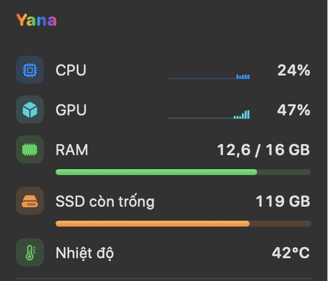
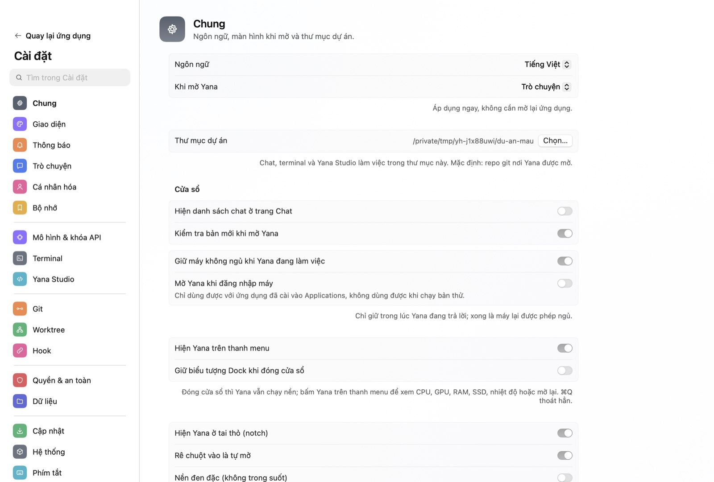

Hình nền cho Studio
50 cảnh động phía sau giao diện, hoặc ảnh và video của bạn.
Một file tải về, hai app: Yana (chat, terminal, chợ plugin) và Yana Studio (trình soạn code nền Code-OSS) mở từ Yana trong cửa sổ riêng. Dùng model nào cũng được, kể cả model chạy ngay trên máy bạn.
Dành cho Mac chip Apple (M1 trở lên) chạy macOS 14 Sonoma trở lên. Mở file .dmg, kéo Yana vào Applications. Yana Studio đã nằm sẵn bên trong, không cần cài riêng.

Bấm chữ Yana để xem CPU, GPU, RAM, SSD còn trống, nhiệt độ và hai app đang dùng bao nhiêu. Đóng cửa sổ thì Yana vẫn chạy nền, ⌘Q thoát hẳn.

50 cảnh động phía sau giao diện, hoặc ảnh và video của bạn.
Mở Studio đúng thư mục đang làm. API key lưu một lần dùng được ở cả hai, nằm trong Keychain. Lịch sử chat vẫn riêng.
Nhạc đang phát, Claude Code và Codex đang làm hay chờ bạn, khay file, clipboard và hẹn giờ.
Chạy được với yana-rt 1.5.6 trở lên, chỉ cho một danh sách ngắn các lệnh. Build và test chạy mã dự án với toàn quyền của bạn.
Thêm model đám mây và model trên máy. Dự án được tách khỏi chat thường.
Từ bản 1.1.0, bấm Cập nhật là app tự tải, kiểm chữ ký và mở lại.
Thanh menu, notch, chạy nền và mở cùng máy đều là công tắc trong Cài đặt. Không thích phần nào thì tắt phần đó.


Số dưới đây đọc từ GitHub, crates.io và PyPI mỗi lần bạn mở trang.
Hai công cụ này cài riêng, chạy được trên macOS, Linux và Windows.
cargo install yana-rt yana-rt chat --provider ollama
pip install yana-ai yana-ai install